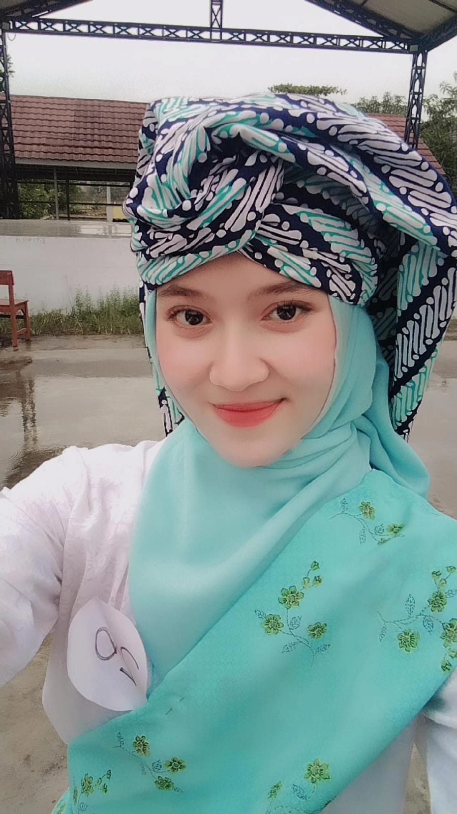
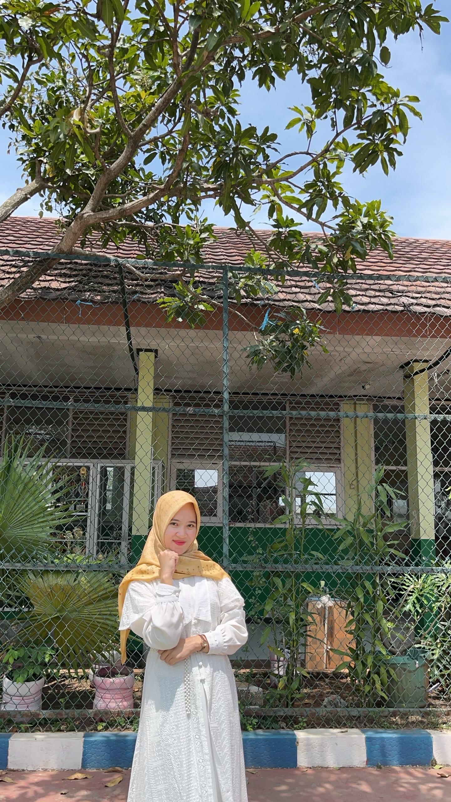
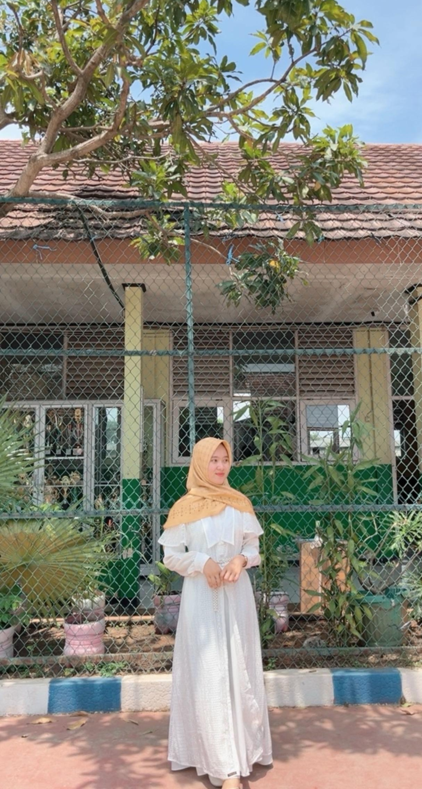

Hari ini langit tersenyum, karena seseorang yang paling berharga di hidupku sedang merayakan hari spesialnya. Setiap detik bersamamu selalu jadi anugerah yang gak pernah berhenti aku syukuri. Kamu adalah alasan kenapa dunia terasa lebih indah, kenapa
setiap pagi terasa punya makna, dan kenapa aku gak pernah berhenti berharap agar hari-harimu selalu penuh senyum. 🌙✨

Terima kasih udah jadi cahaya di hidupku, yang selalu hadir di saat senang maupun saat aku butuh sandaran. Selamat ulang tahun, Ayangku. Semoga semua hal indah selalu berpihak padamu karena kamu pantas dapetin kebahagiaan sebesar cinta yang kamu kasih
ke aku dan ke orang-orang yang ayang sayangi 💞💐
💘 Cerita Cinta Kita 💘
Sebenarnya masih banyak banget kisah indah yang belum aku tulis di sini. Ada tawa kecil yang datang tiba-tiba, obrolan panjang tanpa rencana, dan momen sederhana yang mungkin keliatan biasa buat orang lain, tapi buat aku — semuanya berharga banget. Setiap
tempat yang pernah kita datangi, setiap cerita kecil yang kita bagi, semuanya nyimpen rasa yang gak bisa dijelasin cuma lewat kata. Mungkin gak semua kenangan bisa aku ceritain di sini, tapi setiap detik bareng kamu selalu tersimpan rapi
di ingatan. Karena dari semua hal indah yang pernah aku punya, kamu tetap jadi bagian paling manis yang pernah hadir di hidupku. 💜
💬 Tentang Ayang 💬
Ayangku itu bukan cuma cantik dari luar, tapi hatinya juga tulus banget. Cara dia peduli, cara dia dengerin, bahkan hal-hal kecil yang dia lakuin tanpa sadar semuanya bikin aku ngerasa nyaman dan disayang tanpa syarat. Dia bisa lembut banget, tapi di
balik itu ada keteguhan yang bikin aku kagum. Senyumnya aja udah cukup buat ngilangin semua rasa lelah. 💕

Setiap kali aku liat Ayang, aku selalu ngerasa beruntung banget. Dia itu sosok yang sederhana tapi punya cara luar biasa buat bikin aku ngerasa berarti. Cukup dengan satu tatapan atau senyum kecilnya aja, rasanya semua hal jadi lebih tenang. Ada sesuatu
dari Ayang yang gak bisa dijelasin, tapi selalu berhasil bikin aku jatuh cinta lagi dan lagi. 💜

Aku gak tahu gimana bisa seberuntung ini, tapi setiap hari aku bersyukur karena Tuhan ngasih aku kesempatan buat punya Ayang sebaik dia. Dia bikin aku ngerti kalau cinta itu gak harus besar atau mewah, tapi tentang hal-hal kecil yang dilakukan dengan
tulus. Ayangku adalah rumah yang selalu aku cari tempat paling nyaman buat pulang, dan alasan terindah kenapa aku terus bersyukur tiap hari. 🌸
📸 Galeri Kenangan 📸
💌 Untuk ayang 💌
Selamat ulang tahun, sayang. 💕
Di hari spesialmu ini, aku cuma mau bilang terima kasih sudah hadir dan membuat hidupku terasa lebih lengkap dan berwarna.
Semoga setiap langkahmu selalu dipenuhi kebahagiaan, semoga semua impianmu satu per satu jadi kenyataan, dan semoga aku selalu punya kesempatan untuk melihatmu tumbuh dan bahagia.
Kamu adalah salah satu hal terbaik yang pernah aku temui, dan aku bersyukur bisa ada di sampingmu, bukan cuma hari ini, tapi selamanya.
Selamat bertambah usia, cintaku. Jangan lupa, hari ini kamu berhak bahagia sepenuhnya. 💐